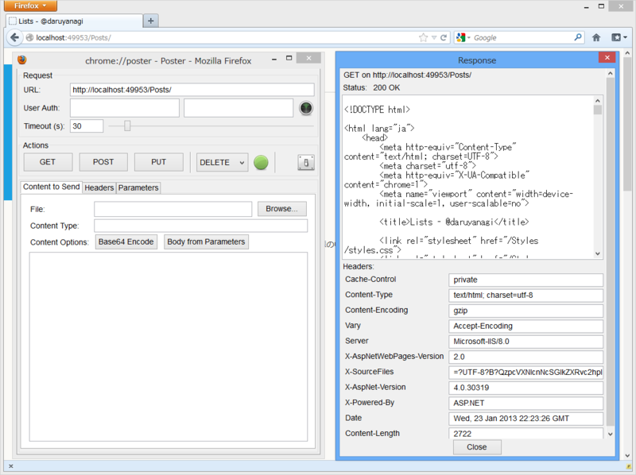
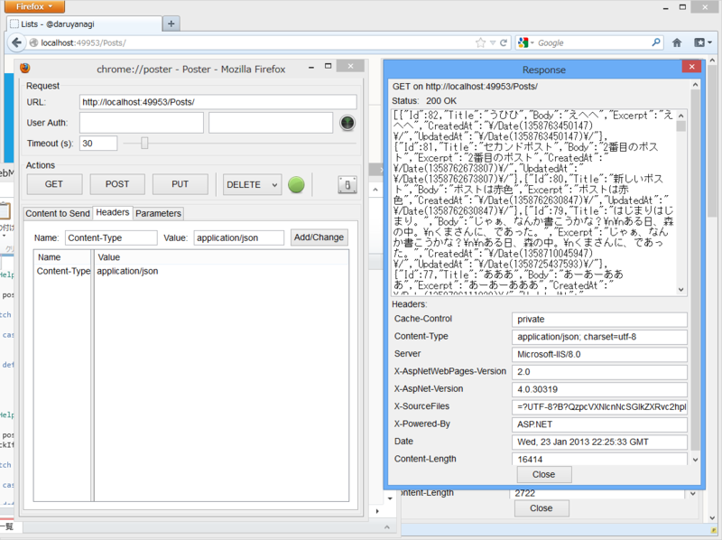

WebMatrix 2：RESTful？な Web アプリケーション （5）
公開日：
WebMatrix 2：RESTful？な Web アプリケーション （4） - だるろぐ の続き。結局こんな感じになったというのを書くのを忘れていた。実際に動作するサンプルは、Windows Azure に置いておいた。
モーダルダイアログの表示に pointer-events というのを使ったのだけど、実はこれ、IE/Opera では使えないらしい。興味のある人は Mozilla Firefox か Google Chrome で試してほしいかな。デザインの過程は WebMatrix でほかの Web サイトのデザインをパク……じゃなくて、参考にさせていただく - だるろぐ を参照。
データベースとのやり取り
~/App_Code/Post.cs に書いておいた。一つのファイルにごちゃっと書いておけるのが ASP.NET Web Pages のお手軽なところだと思うけれど、まぁ、わけておいた方があとあとメンテナンスしやすそう。
using System; using System.Collections.Generic; using System.Linq; using System.Web.WebPages; using WebMatrix.Data;public class Post { // ここら辺はテーブルの構造をそのまま定義 public long Id { get; set; } public string Title { get; set; } public string Body { get; set; } public DateTime CreatedAt { get; set; } public DateTime UpdatedAt { get; set; }
- public string Excerpt // 本文の一部だけを取得
- {
- get
- {
- return Body.IsEmpty()
- ? string.Empty
- string.Join("", Body.Take(40)); } }
// クエリで受け取ったデータ（dynamic）から // Post オブジェクトを生成 public Post(dynamic record) { Id = record.Id; Title = record.Title; Body = record.Body; CreatedAt = record.CreatedAt; UpdatedAt = record.UpdatedAt; } }
public static class PostRepository { public static IEnumerable<Post> List() { const string query = "SELECT * FROM Post ORDER BY CreatedAt DESC";
using (var db = Database.Open("db")) { return db.Query(query).Select(_ => new Post(_)); } }
public static Post Find(long id) { const string query = "SELECT * FROM Post WHERE Id=@0";
using (var db = Database.Open("db")) { return new Post(db.QuerySingle(query, id)); } }
// タイトルでも検索できるように public static Post Find(string title) { const string query = "SELECT * FROM Post WHERE Title=@0";
using (var db = Database.Open("db")) { return new Post(db.QuerySingle(query, title)); } }
public static long Create(string title, string body) { const string query = "INSERT INTO Post (Title, Body, CreatedAt, UpdatedAt)"
- "VALUES(@0, @1, @2, @3)"; var now = DateTime.Now;
using (var db = Database.Open("db")) { db.Query(query, title, body, now, now); // INSERT した列の Id を取得するのってこうやればいいらしい var result = db.QueryValue("SELECT @@IDENTITY"); return Convert.ToInt64(result); } }
public static void Update(long id, string title, string body) { var query = "UPDATE Post SET Title=@0, Body=@1, UpdatedAt=@2 WHERE Id=@3"; var now = DateTime.Now;
using (var db = Database.Open("db")) { db.Query(query, title, body, now, id); } }
public static void Delete(long id) { var query = "DELETE FROM Post WHERE Id=@0";
using (var db = Database.Open("db")) { db.Query(query, id); } } }
これで List()、Find()、Create()、Update()、Delete() が使えるようになった。
メソッドに応じて異なるビューを呼び出す
~/Posts.cshtml の中身。IIS はデフォルトで PUT/DELETE が使えないみたい。Web.config を書き換えてもいいのだけど、ここは _method = "PUT" がリクエストに含まれていたら PUT として処理することにした。
@using System.Reflection@try { // POST で PUT/DELETE を代用 string method = Request.HttpMethod.ToUpper(); if (IsPost && Request["_method"] != null) { method = Request["_method"].ToUpper(); // Camelize() とか作っておくといいのかも }
// パラメーターの型を解釈（なるべく long に、無理なものは string のまま） var args = UrlData.Select<string, object>(_ => { try { return long.Parse(_); } catch { return _; } }).ToArray();
// メソッドの検索 MethodInfo method_info = this.GetType().GetMethod( method, args.Select(_ => _.GetType()).ToArray() );
// 検索したメソッドを呼び出してビューをレンダリング @method_info.Invoke(this, args); } catch (Exception e) { throw new ApplicationException(); }
@functions // HelperResult を返せば、@… で呼び出してビューがレンダリングされる { private const string VIEW_POST_DETAIL = "~/Views/Posts/_ShowPost.cshtml"; private const string VIEW_POST_ARCHIVE = "~/Views/Posts/_ListPosts.cshtml";
public HelperResult GET() // Camelize() すれば Get() で呼び出せるケド { var posts = PostRepository.List();
switch (Request.ContentType) // JSON でも返せるように！ { case "application/json": RenderJason(posts); return null; default: return RenderPage(VIEW_POST_ARCHIVE, posts); } }
public HelperResult GET(long id) { var post = PostRepository.Find(id); CheckIfPostIsNull(post);
switch (Request.ContentType) { case "application/json": return RenderJason(post); default: return RenderPage(VIEW_POST_DETAIL, post); } }
public HelperResult GET(string title) { var post = PostRepository.Find(title); CheckIfPostIsNull(post);
switch (Request.ContentType) { case "application/json": return RenderJason(post); default: return RenderPage(VIEW_POST_DETAIL, post); } }
public void POST() { var title = Request["Title"]; var body = Request["Body"]; var id = PostRepository.Create(title, body);
switch (Request.ContentType) { case "application/json": default: RenderJason(id); break; } }
public void PUT(long id) { var title = Request["Title"]; var body = Request["Body"]; PostRepository.Update(id, title, body);
switch (Request.ContentType) { case "application/json": default: RenderJason(id); break; } }
public void PUT(string title) { var post = PostRepository.Find(title); CheckIfPostIsNull(post);
var new_title = Request["Title"]; var body = Request["Body"]; PostRepository.Update(post.Id, new_title, body);
switch (Request.ContentType) { case "application/json": default: RenderJason(post.Id); break; } }
public void DELETE(long id) { PostRepository.Delete(id);
switch (Request.ContentType) { case "application/json": default: RenderJason(id); break; } }
public void DELETE(string title) { var post = PostRepository.Find(title); CheckIfPostIsNull(post);
PostRepository.Delete(post.Id);
switch (Request.ContentType) { case "application/json": default: RenderJason(post.Id); break; } } }
@functions { private HelperResult RenderJason(long id) // Id だけを JSON で返す { Response.Clear(); Response.ContentType = "application/json"; Response.Write(string.Format(@"{{ ""Id"": ""{0}"" }}", id)); Response.End(); return null; // null を返すなら HelperResult 型にしなくてもいい気はする }
private HelperResult RenderJason(object post) // Post だの Posts だのを JSON で返す { Response.Clear(); Response.ContentType = "application/json"; Response.Write(Json.Encode(post)); Response.End(); return null; }
private void CheckIfPostIsNull(Post post) { if (post == null) throw new HttpException(404, "Post is not found."); } }

Content-Type によって応答が切り替わるようにしてみた。
ビュー
全部のっけても仕方ないので、~/Views/Posts/_ShowPost.cshtml" だけを。
@{
var model = PageData.First().Value as Post; // もはやイディオムかな……
Page.Title = model.Title;
Page.PostId = model.Id;
Layout = "~/_SiteLayout.cshtml";
}
<h1>@Page.Title</h1>
@model.Body
@section Dialog // 編集作業はモーダルダイアログで処理することにした
{
<aside id="EditDocument" class="modal">
<script type="text/javascript">
$(function () {
$(’#edit-document').click(function () {
$.ajax({
url: "@Request.Url.AbsolutePath",
type: 'POST',
data: {
’_method': "PUT",
'Title': $(’#Edit-Title').val(),
'Body': $(’#Edit-Body').val(),
},
success: function (data) {
var uri = ’@Request.Url.GetRoot()/Posts/‘ + data.Id;
window.location.replace(uri); // リダイレクト
},
error: function (data) {
alert('failure');
},
});
})
});
</script>
<div class="modal-wrapper">
<header class="modal-header">
<h1><input type="text" id="Edit-Title" value="@model.Title" /></h1>
</header>
<div class="modal-content">
<textarea id="Edit-Body" placeholder="なんか書いてもええんやでぇ">@model.Body</textarea>
</div>
<footer class="modal-footer">
<a href="javascript: void(0)" id="edit-document" class="button">OK</a>
<a href="#close" title="Close" class="button">キャンセル</a>
</footer>
</div>
</aside>
<aside id="RemoveDocument" class="modal">
<script type="text/javascript">
$(function () {
$(’#remove-document').click( function () {
$.ajax({
url: "@Request.Url.AbsolutePath",
type: 'POST',
data: {
’_method': "DELETE",
},
success: function (data) {
var uri = ’@Request.Url.GetRoot()/Posts/‘;
window.location.replace(uri);
},
error: function (data) {
alert('failure');
},
});
})
});
</script>
<div class="modal-wrapper">
<header class="modal-header">
<h1><span id="Delete-Title" >@model.Title</span> を削除しようとしています……</h1>
</header>
<div class="modal-content">
<p>本当に削除しますか？</p>
</div>
<footer class="modal-footer">
<a href="javascript: void(0)" id="remove-document" class="button">OK</a>
<a href="#close" title="Close" class="button">キャンセル</a>
</footer>
</div>
</aside>
}
普通の MVC フレームワークだと
- GET /Posts/Edit/:Id
なんかで編集画面に遷移すると思うのだけど、今回は
- GET /Posts/:Id#Edit
で編集ダイアログを表示するようにしてる（今は開発中の可読性のために #EditDocument としているけど）。ルーティング処理を手抜きしたかったのもあるし、こうした方がかっこよくないか？ ってところもあって。そんなわけで、リダイレクト処理もサーバー側が処理するのではなくて、ビューの JavaScript が担当するようになっている。
積み残した部分もあるけど、とりあえずはこれで終わり。つぎは予定通り Twitter/Facebook 認証を使ってみようかと思う。